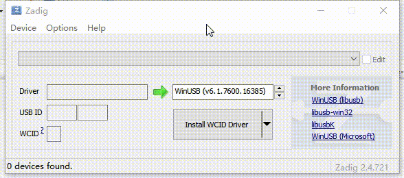
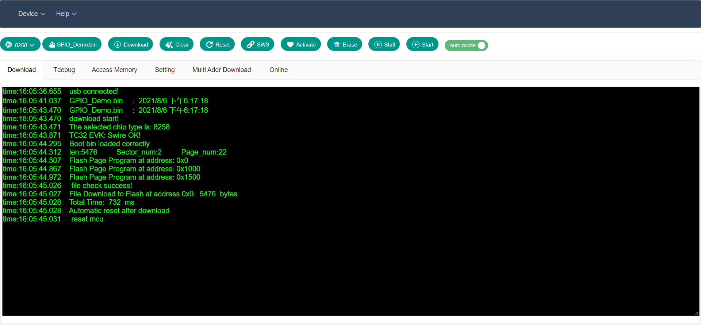
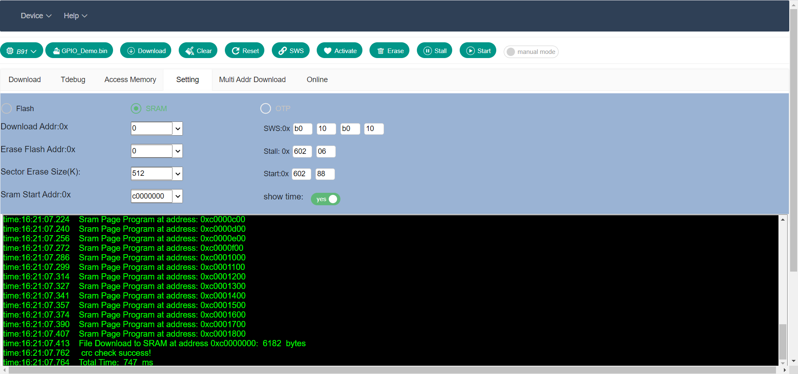
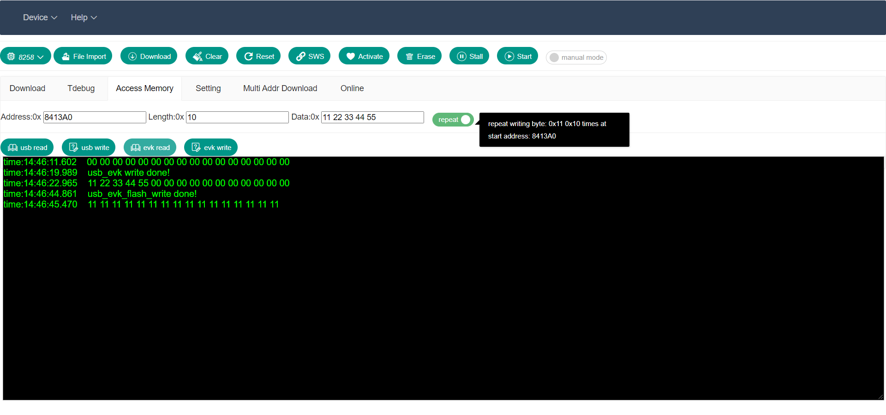
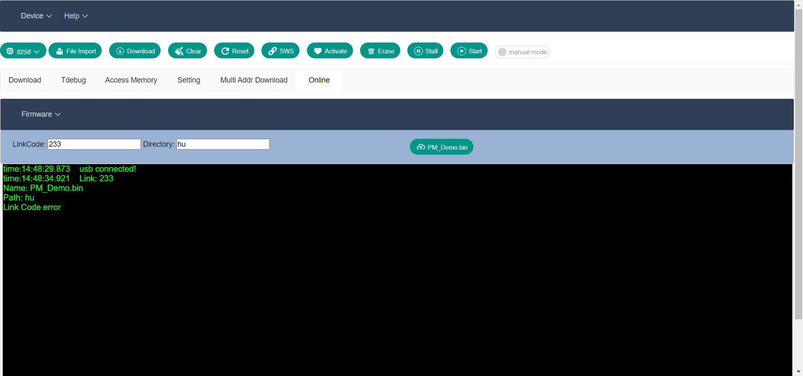

WEB BDT V1.1.0¶
English off-line for Windows BDT for Windows driver for WEB BDT firmware for Burning EVK PDF版下载
目录¶
1、简介¶
1.1 功能概述¶
2、操作指南¶
2.1 准备工作¶
2.1.1 Burning EVK libusb驱动安装¶
2.1.2 设备连接¶
2.2 固件下载¶
2.2.1 下载固件到FLASH中¶
2.2.2 下载固件到SRAM中¶
2.3 FLASH擦除¶
2.4 Activate MCU¶
2.5 Debug¶
2.5.1 数据的读写¶
2.5.1.1 数据的读¶
2.5.1.2 数据的写¶
2.5.2 反汇编文件的解析¶
2.5.3 Debug MCU¶
2.5.3.1 Run MCU¶
2.5.3.2 Pause MCU¶
2.5.3.3 Trace PC¶
2.5.3.4 Step MCU¶
2.5.3.5 Stall MCU¶
2.5.3.6 Start MCU¶
2.6 SWS¶
2.7 多地址下载¶
2.8 固件升级¶
2.9 文件上传¶
3、单机版WEB BDT¶
4、Windows for BDT¶
1、简介¶
“WEB BDT(Telink Burning and Debugging Tool)”适用于泰凌芯片的下载和调试。本文档介绍了如何使用“WEB BDT”。 Telink原来的调试下载工具为 BDT ，可在Windows平台下使用。为了工具能跨平台使用，同时用户可即开即用，而不必去下载和安装工具，Telink新推出了基于Web的下载调试工具 Web BDT (开源，可二次开发)。用户可以通过网页来进行程序的下载和调试，网页支持Windows，Linux，macOS，Android等平台，只需要一个兼容的网页浏览器即可，推荐使用较新版本的Chrome或者Edge。
1.1 功能概述¶
在开发过程中，通过使用BDT可将固件下载到目标板中，其主要功能包括：FLASH的擦除、固件的下载、芯片的激活、读写全局变量、变量列表的展示、单步调试、读取PC值、暂停和启动芯片、在线或本地多固件多地址下载、在线或本地"Burning EVK"固件更新、上传文件到服务器等。
点击"install"可将网页以原生应用的方式安装在电脑/手机上，并自动添加桌面快捷方式，用户也可将应用固定任务栏处。同时采用离线存储和后台同步技术，网页可在没有网络的条件下使用(从服务器上下载程序功能除外)。
"WEB BDT"支持Windows系统、macOS系统、Android系统、Linux系统，推荐使用较新版本的Edge/Chrome浏览器。浏览器支持情况如下图:
2、操作指南¶
2.1 准备工作¶
2.1.1 Burning EVK libusb驱动安装¶
Web BDT通过Web USB控制Telink burning evk(一款下载调试器)，为了能使用Web BDT，需要给电脑安装libusb驱动。而传统BDT工具通过Windows自带的usb printer驱动去操控Telink burning evk。 为了避免Windows平台同时使用Web BDT和传统的BDT时需要频繁的切换驱动，需要更新Telink burning evk本身的固件程序。更新之后，通过Telink burning evk上的按键SW2来切换USB PID。 1. 如果上电后Telink Burning EVK单个LED常亮，则不需要更新固件，否则就需要下载对应的 固件 到模块板中，通过旧的BDT工具更新固件后重新上电。
2. BDT和Web BDT对应的LED状态如下图，传统BDT用绿灯指示，Web BDT用蓝灯指示，通过按键SW2可以切换USB PID并改变LED状态(切换状态后，需要重新上电)。
3. 使用Web BDT前需要先安装一次libusb驱动，方法如下：下载 Zadig Telink burning evk设置为蓝灯状态（若上电后改变了LED状态，需要重新上电后生效设置），通过USB连接PC，安装libusb驱动，过程见下图，驱动安装需要几十秒甚至更长时间，需要耐心等待。 
2.1.2 设备连接¶
- 通过USB线缆连接Burning EVK和电脑，把Burning EVK的SWM，3V3，GND 分别开发板的 SWS，3V3，GND连接
- 通过Burning EVK上的SW2切换为LED蓝灯状态并重新连接USB(如果上一次连接的时候已经切换为该状态则可跳过这一步)
- 点击下拉菜单Device中的Connect，浏览器会跳出器件连接的选择，选择Telink Web Debugger设备并点击连接(若有多个"Burning EVK"连接，则弹出的列表中会有多个Telink Web Debugger设备，请选择自己想要连接的设备)。
2.2 固件下载¶
¶
在下载固件前，请先确保目标板和电脑已通过"Burning EVK"正确连接并且可以进行通信。 2.2.1 下载固件到FLASH中¶
用户可以按照本节中的指南将固件下载到目标板中指定的FLASH地址空间中。 1. 点击芯片选择下拉菜单并选择目标板的芯片型号，默认是B91。 2. 在"Setting"选项卡中的Download Addr:0x输入框中输入FLASH下载的首地址（十六进制），例如0（默认首地址为0）或者20000（首地址为0x20000）。 3. FLASH/SRAM选框中选择FLASH(默认)。
4. 点击"File Import"按钮选择要下载到目标板中的固件文件。文件的名称和生成的时间会打印到下方日志窗口中，文件名会显示在"File Import"按钮上。 5. 检查目标板与电脑的连接，如果还没连接或者连接断开，再次连接也是可行的。 6. 点击下载按钮，就可以将所选固件下载到所设置的FLASH地址中去，日志窗口会显示相应的日志信息。 7. 复位MCU，使新下载的程序运行而无需关闭MCU的电源。用户可以按照以下两种方法中的任意一种复位MCU。
- manual mode/auto mode选框中如果选择的是manual mode，下载后用户需要手动点击Reset按钮对芯片进行复位。
- manual mode/auto mode选框中如果选择的是auto mode，下载后设备会自动复位。 
2.2.2 下载固件到SRAM中¶
固件下载到SRAM中的操作流程跟下载到FLASH中类似，与下载到FLASH中不同的是，需要在FLASH/SRAM选框中选择SRAM(默认是FLASH)。并且需要在Sram Start Addr:0x输入框中输入SRAM下载的首地址（十六进制），例如c0000000（0xc0000000，B91的默认首地址）或者c0002000（首地址为0xc0002000）。将程序下载到B91芯片SRAM中并自动复位的演示如下图。 
2.3 FLASH擦除¶
FLASH擦除功能用来擦除以4KB为单位的指定FLASH地址，用户可以按照以下步骤操作。 1. 在Erase Flash Addr:0x输入框中设置要擦除的闪存空间的起始地址（十六进制），例如0（默认首地址为0）或者2000（首地址为0x2000）。 2. 在Sector Erase Size(K)输入框中设置要擦除的闪存空间的大小（十进制），例如512（默认擦除大小为512KB）或者1024（擦除大小为1024KB）。 3. 单击"Erase"按钮开始擦除目标板的指定闪存空间。擦除B91芯片中从0地址开始的512KB大小的FLASH演示如下图。

2.4 Activate MCU¶
当电脑与目标板通信失败时（例如芯片进入低功耗模式），可以通过按钮Activate去激活芯片。激活成功时，日志窗口会打印"Activate OK!"，失败会打印"Activate failed!"。

2.5 Debug¶
2.5.1 数据的读写¶
2.5.1.1 数据的读¶
- 选择对应的芯片型号。
- 点击"Access Memory"选项卡。
- 输入框"Address:0x"中输入地址（十六进制），例如80000（0x80000)。
- 输入框"“Length:0x"中输入需要读取的字节数量（十六进制），例如10（0x10)。
- 点击"usb read"按钮，可读取"Burning EVK"的数据（起始地址和大小由上面步骤设置）,点击"evk read"按钮，可读取目标板的数据（起始地址和大小由上面步骤设置）。
2.5.1.2 数据的写¶
- 选择对应的芯片型号。
- 点击"Access Memory"选项卡。
- 输入框"Address:0x"中输入地址（十六进制），例如80000（0x80000)。
- 输入框"Length:0x"中输入需要写入的字节数量（十六进制），例如10（0x10)。
- 输入框"Data:0x"中输入需要写入的数据。
- normal/repeat选框可以选择写入数据的模式，normal模式：将Data输入框中的数据写入起始地址处；repeat模式：将Data输入框中第一个数据写入起始地址处，写入个数为输入框Length中的输入数。
- 点击"usb write"按钮，可往"Burning EVK"写入数据（数据、起始地址和大小由上面步骤设置）,点击"evk write"按钮，可往目标板写入数据（数据、起始地址和大小由上面步骤设置）。
数据的读写操作演示如下图
2.5.2 反汇编文件的解析¶
- 选择对应的芯片型号。
- 打开"Tdebug"选项卡进入Tdebug页面，点击"File Import"按钮，选择反汇编文件（默认后缀为.lst或者.txt）。
- 点击"refresh"按钮，网页会从反汇编文件中的符号表中找到全局变量端数据信息，并根据不同芯片解析出每条数据的变量名和地址以及长度。并且根据这些数据调用目标板数据读取功能，一一进行读取数据，并将数据显示在下方列表中（显示数据时，低字节在前，无论数据长度多长都打印在网页中显示）。点击"refresh"按钮，可以更新一次读取，数据更新完会在右侧的日志窗口中有提示。 variable/function选框可以选择显示的是变量列表还是函数列表，addr/name选框可以选择是按地址排序还是按名称排序，两个选项可以组合使用。 下图演示了对反汇编文件的读取：


2.5.3 Debug MCU¶
在使用"Stall"、"Start"、"Run"、"Pause"、"Step"、"PC"这些功能前，请确保所选MCU支持此功能，有关详细信息，请参阅下方功能支持列表。
| |8266|8368|8367_i|8367_e|8369_i|8369_e|8232|8233|8266|8267|8269|8255|8258|8278|B91| | - |:-:|:-:|:-:|:-:|:-:|:-:|:-:|:-:|:-:|:-:|:-:|:-:|:-:|:-:| -:| | Stall| √ | √ | √ | √ | √ | √ | √ | √ | √ | √ | √ | √ | √ | √ | × | | Start| √ | √ | √ | √ | √ | √ | √ | √ | √ | √ | √ | √ | √ | √ | × | | Run | √ | √ | √ | √ | √ | √ | √ | √ | √ | √ | √ | √ | √ | √ | × | | Pause| √ | √ | √ | √ | √ | √ | √ | √ | √ | √ | √ | √ | √ | √ | × | | Step | √ | √ | √ | √ | √ | √ | √ | √ | √ | √ | √ | √ | √ | √ | × | | PC | √ | √ | √ | √ | √ | √ | √ | √ | √ | √ | √ | √ | √ | √ | × |2.5.3.1 Run MCU¶
点击"Pause"或"Step"按钮后，用户可以单击"Run"按钮使MCU继续从停下的位置开始运行，可以通过点击"PC"按钮读取PC以确保程序再次运行。
2.5.3.2 Pause MCU¶
要查看MCU状态的详细信息，用户可以单击"Pause"按钮暂停微控制器。点击"Run"按钮，MCU将从当前位置继续运行。
2.5.3.3 Trace PC¶
如果与目标板的通信可用，用户可以单击"PC"按钮，查看指令的当前位置。通过选择Single step/continue选框来控制是单步模式还是追踪模式，如下所示。
2.5.3.4 Step MCU¶
如果与目标板的通信可用，用户可以单击"Step"按钮，逐步查看指令的当前位置。通过选择Single step/continue选框来控制是单步模式还是追踪模式，如下所示。
2.5.3.5 Stall MCU¶
当没有足够的时间查看MCU的状态时，用户可以单击"Stall"按钮以暂停MCU并查看MCU的状态或更改MCU的配置。
2.5.3.6 Start MCU¶
暂停MCU后，点击"Start"按钮启动MCU，使MCU从SRAM起始处运行。
2.6 SWS¶
在设置单线同步速度之前，请确保项目：
- 电源正常；
- MCU未处于"低功耗"模式；
- 具备单片机的单线功能；
- 系统时钟正常。
当"Burning EVK"和目标板之间无法建立连接时，用户可以尝试设置Swire的同步速度来建立连接。注：Swire寄存器地址可能因芯片类型而异。"SWS"按钮前的四个可编辑框可以更改"Burning EVK"和目标板的速度，单击"SWS"按钮以执行Swire同步。 建议在将固件下载到目标板或调试MCU之前，执行一次Swire同步检查与目标板的通信是否正常。如果与目标板的通信状态错误，可以根据第2.6节开头提到的方法解决问题。下图为同步成功时的演示图。
2.7 多地址下载¶
选择与目标板对应的芯片型号，打开"Multi Addr Download"选项卡，在输入框中输入下载的首地址，点击靠左边的一列的按钮可以选择本地文件，靠右侧的一列按钮上显示的文件名称根据所选芯片不同而不同，右侧文件存储在服务器端，本地文件和服务器端文件可混合多选，进而多地址下载。多地址下载功能的使用示意图如下：
2.8 固件升级¶
固件升级分为两类，一类是选择本地固件进而对"Burning EVK"进行升级，另一类是从服务器端下载固件进行更新。点击"Online"选项卡下的Firmware下拉框选择本地或者服务器端对应的固件。固件更新功能演示示意图如下：

2.9 文件上传¶
打开"Online"选项卡，在LinkCode输入框中填入正确的一次性连接码，点击"Upload File"按钮，选择要上传的本地文件，Directory输入框中输入的是保存在服务器中的相对目录名。文件上传功能演示示意图如下： 
3、单机版WEB BDT¶
下载 off-line for Windows 安装好USB驱动 driver for WEB BDT 并且更新最新版的"Burning EVK"的固件 firmware for Burning EVK 点击"启动.vbs"和"关闭.vbs"用来打开和关闭程序。
4、Windows for BDT¶
下载：Windows for BDT 使用说明在下载文件里有。